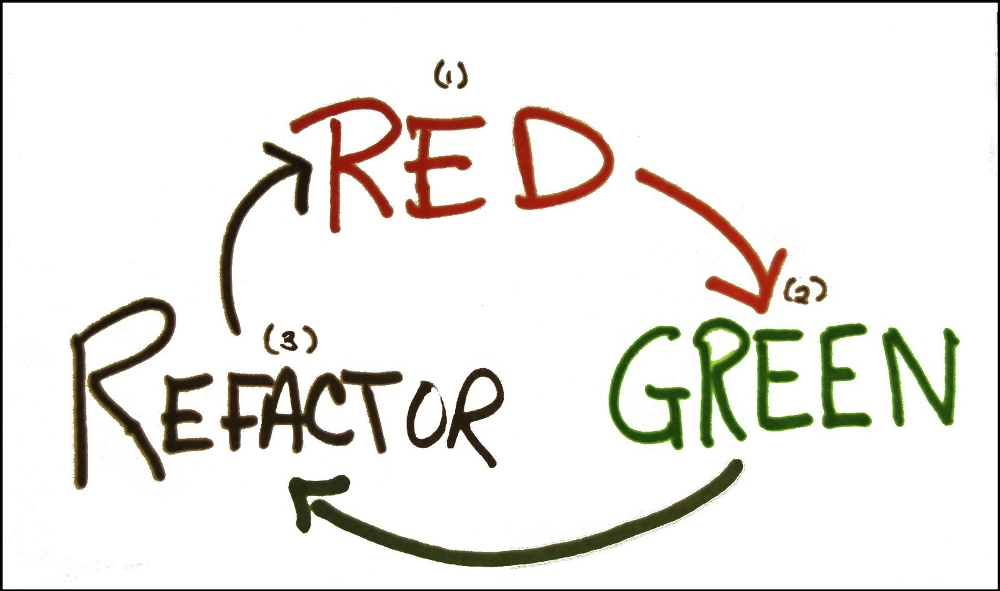
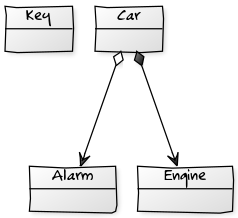
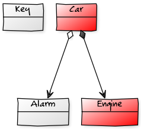
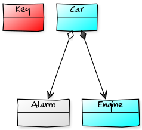
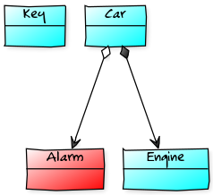

CodingDojo
Test Driven Development
git clone https://github.com/worldline/bfi-ecs-coding-dojo
Franck Verrot
Introduction au TDD
Franck Verrot
Propositions... vraies ou fausses?
- La pratique du TDD permet de trouver tous les bugs.
- Le TDD ça coûte cher
- Plus de rigueur = moins de bugs
- C'est par la pratique que l'on apprend.
Test-Driven Development
Qu'est-ce que le TDD
- Une boucle d'apprentissage très courte
- Des indicateurs sur la qualité d'implémentation
- Une méthode de conception
Test-Driven Development
Méthodologies utilisés
- Un cycle de vie "Red - Green - Refactor"
- Des pratiques et habitudes
Test-Driven Development
Red - Green - Refactor = Test-first + Refactor = TDD

- Nouveau test d'une fonctionnalité
- Implémentation de la fonctionnalité
- Factorisation du code produit
Des pratiques et habitudes
Des principes
- Single Responsibility : que fait la classe/méthode X?
- Open/Closed : composition < héritage
- Liskov Substitution : définitions de contrats
- Interface Segregation : interfaces plus petites
- Dependency Inversion : découplage plus fort
Des pratiques et habitudes
Des principes
- Single Responsibility : que fait la classe/méthode X?
Des pratiques et habitudes
Des principes
- Single Responsibility : que fait la classe/méthode X?
- Open/Closed : composition < héritage
Des pratiques et habitudes
Des principes
- Single Responsibility : que fait la classe/méthode X?
- Open/Closed : composition < héritage
- Liskov Substitution : définitions de contrats
Des pratiques et habitudes
Des principes
- Single Responsibility : que fait la classe/méthode X?
- Open/Closed : composition < héritage
- Liskov Substitution : définitions de contrats
- Interface Segregation : interfaces plus petites
Des pratiques et habitudes
Des principes
- Single Responsibility : que fait la classe/méthode X?
- Open/Closed : composition < héritage
- Liskov Substitution : définitions de contrats
- Interface Segregation : interfaces plus petites
- Dependency Inversion : découplage plus fort
Les gains du TDD
- Testabilité
- Maintenabilité
- Réusabilité
- D'autres mots en é
Live coding
- Sans framework
- A partir d'un Main
- En voiture...

Live coding

git checkout -f tdd-01-step0-java
git checkout -f tdd-01-step0-oc
Live coding
feature 1 - Démarrage d'un moteur
Lorsqu'un moteur démarre il fait vrooom.
feature 2 - Démarrage d'une voiture
Quand la voiture démarre, ça démarre le moteur et vrooom.
Live coding
- Avez-vous testé la voiture seule ?
- Est-ce la voiture ou le moteur qui fait vroom ?
Atelier - La clé
Faites signe aux organisateurs.
Atelier - La clé

git checkout -f tdd-01-step1-java
git checkout -f tdd-01-step1-oc
Atelier - La clé
feature 1 - La clé sert à démarrer la voiture
Une voiture démarre grâce à une clé.
feature 2 - La clé sert à démarrer la voiture
Une voiture ne démarre pas sans clé.
feature 3 - La clé sert à démarrer la voiture
Une mauvaise clé ne démarrera pas la voiture.
Atelier - L'alarme
Faites signe aux organisateurs.
Atelier - L'alarme

git checkout -f tdd-01-step2-java
Atelier - L'alarme
feature 1 - L'alarme fait du bruit
Une alarme fait pouet.
feature 2 - L'alarme est déclenchée par la voiture
L'alarme sonne quand on démarre la voiture sans clé.
feature 3 - L'alarme est en option
Une voiture ne nécessite pas une alarme.
Atelier - L'alarme
feature 4 - L'alarme high-tech
Ce type d'alarme prévient par mail.
Atelier - L'alarme
feature 5 - L'alarme exceptionnelle
Ce type d'alarme déclenche une exception.
- Java :
throw new ...Exception(...);
- Objective-C :
[...Exception raise];
- Rust :
fail!(...);
Atelier - Les outils
Faites signe aux organisateurs.
git checkout -f tdd-01-step3-java
Atelier - Les outils
Test unitaire - Objective-C - XCTest
// File : EngineUnitTest.m
#import <XCTest/XCTest.h>
@interface EngineTest : XCTest
@end
@implementation EngineTest
- (void) setUp { [super setUp]; }
- (void) tearDown { [super tearDown]; }
- (void) shouldStartEngine { /* ... */ }
@end
Atelier - Les outils
Test unitaire - Java - JUnit
// File : EngineUnitTest.java
import org.junit.After;
import org.junit.Before;
import org.junit.Test;
public class EngineTest {
@Before
public void setUp { /*...*/ }
@After
public void tearDown { /*...*/ }
@Test
public void shouldStartEngine { /* ... */ }
}
Atelier - Les outils
Test unitaire - Objective-C - OCMockito
// mock creation
NSMutableArray *mockArray = mock([NSMutableArray class]);
// using mock object
[mockArray addObject:@"one"];
[mockArray removeAllObjects];
// verification
[verify(mockArray) addObject:@"one"];
[verify(mockArray) removeAllObjects];
Atelier - Les outils
Test unitaire - Java - Mockito
// mock creation
ArrayList mockedList = mock(ArrayList.class);
// using mock object
mockedList.add("one");
mockedList.clear();
// verification
verify(mockedList).add("one");
verify(mockedList).clear();
Rappel avant de partir
- TDD - Test Driven Development
- Test unitaire - Test d'une classe et sa collaboration
- Test d'intégration - Test d'un ensemble de classes
- Mock - Simuler moi? Jamais
Roti
- 5. Excelent - Super coding dojo, je reviens la prochaine fois.
- 4. Bon - Je suis content d'être venu aujourd'hui.
- 3. Juste - Je n'ai pas perdu mon temps, sans plus.
- 2. Utile - Mais ça ne valait pas à 100% le temps que j'y ai passé.
- 1. Inutile - Je n'ai rien appris. J'ai vraiment perdu mon temps.
Facilité
- 5. Trop facile
- 4. Un peu facile
- 3. Juste bien
- 2. Un peu compliqué
- 1. Trop compliqué
Questions ?
- William CHU-FUK-SHIAN
- Julien LEVESY
- Franck Verrot
- Olivier PEREZ